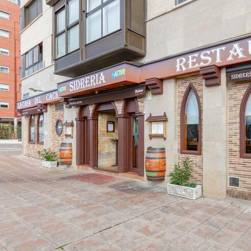
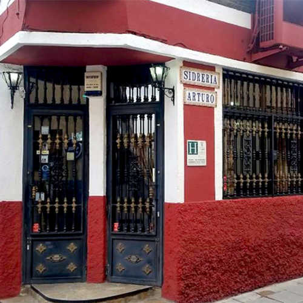
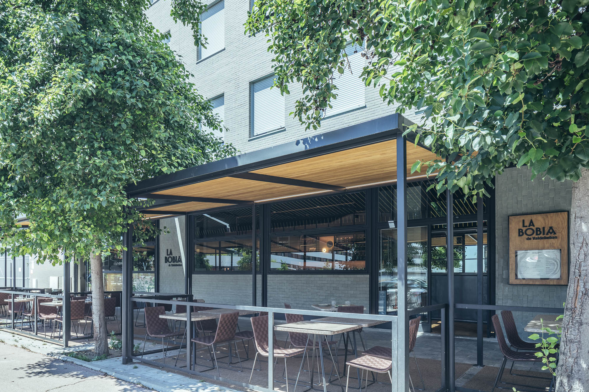
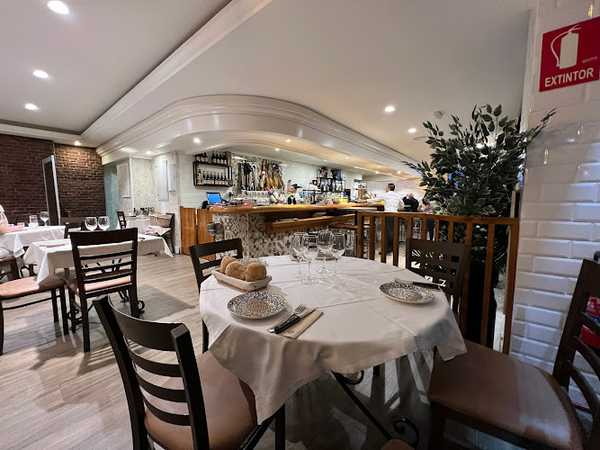
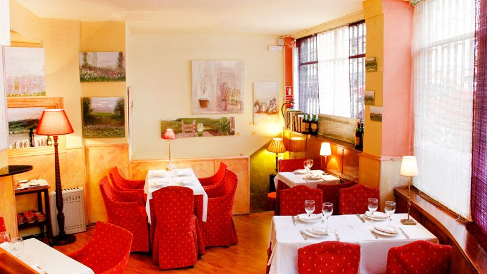
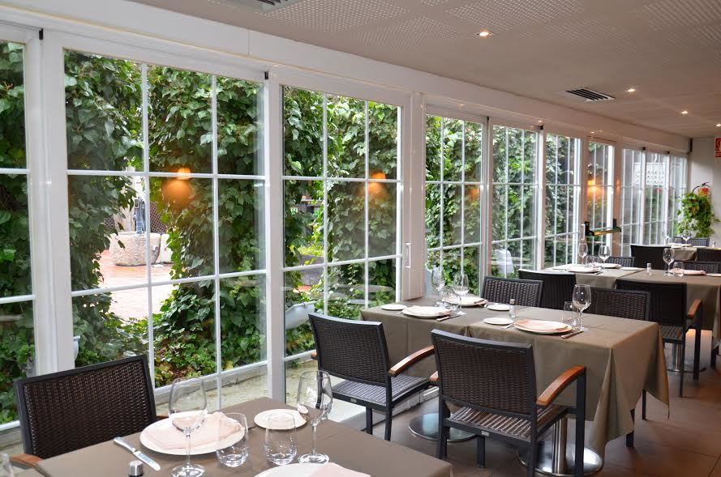

¿Dónde comer una buena fabada, un cachopo o disfrutar de sidra natural en el norte de Madrid sin pagar de más? Hemos seleccionado seis restaurantes y comparado sus precios medios publicados, valoraciones de clientes y propuestas gastronómicas. El resultado: dos ganadores claros por relación calidad-precio, además de otras cuatro direcciones que merece la pena conocer.
Lo esencial: nuestros dos ganadores
- 🥇 Sidrería Astur (Sanchinarro): nuestra primera elección por su cocina asturiana reconocible, la fabada diaria, la variedad de cachopos y un menú de diario competitivo.
- 🥈 Sidrería Arturo (Hortaleza): destaca por su valoración de 9,4/10, sus 373 opiniones y un precio medio publicado de 25 €.
Las valoraciones y precios son los que figuraban en las fichas consultadas el 23 de noviembre de 2026; pueden cambiar.
🥇 1. Sidrería Astur — Sanchinarro

Nuestra ganadora por variedad, cocina tradicional y opciones para ajustar el presupuesto.
Sidrería Astur lleva su propuesta asturiana a Sanchinarro. En su carta destacan la fabada, que preparan a diario, seis variedades de cachopo, fabes, arroces y sidra natural asturiana escanciada. La web del restaurante publica un menú de martes a viernes por 17,50 € y la fabada a 21 €.
TheFork mostraba un precio medio de 29 € y una valoración de 9,3/10 con 440 opiniones en la ficha consultada. Es una combinación interesante para quien busca una carta amplia y platos asturianos clásicos.
Por qué gana: ofrece variedad, especialidades reconocibles y un menú de diario que mejora mucho la relación calidad-precio.
- Dirección: Calle Arroyo del Charco del Pescador, 2, Sanchinarro.
- Qué pedir: fabada, cachopo y sidra natural.
- Precio orientativo: menú de diario 17,50 €; precio medio publicado en TheFork, 29 €.
Web oficial y carta · Ficha y opiniones en TheFork
🥈 2. Sidrería Arturo — Hortaleza

La segunda gran compra por calidad-precio.
Sidrería Arturo es una casa de ambiente tradicional en Hortaleza. TheFork mostraba una valoración de 9,4/10 con 373 opiniones y un precio medio de 25 €. Entre los platos publicados aparecen la fabada asturiana por 24 €, el cachopo por 22 €, el chorizo de Tineo a la sidra por 8 € y el arroz con leche por 6,50 €.
Las opiniones recientes mencionan especialmente la fabada, la atención y la buena relación calidad-precio.
Por qué queda segunda: excelente valoración, precios contenidos y platos asturianos muy reconocibles.
- Dirección: Calle del Mar de Bering, 9, Hortaleza.
- Qué pedir: fabada, cachopo y chorizo a la sidra.
- Precio medio publicado: 25 €.
Carta, opiniones y reservas en TheFork
Otros cuatro restaurantes asturianos que merece la pena conocer
3. La Bobia Valdebebas

Una alternativa especialmente cómoda para quienes viven en Valdebebas y alrededores. Su local cuenta con una terraza cubierta y un comedor de diseño contemporáneo. Puede ser una buena opción para comer en el barrio sin desplazarse a otras zonas del norte de Madrid.
- Dirección: Calle de Luis Moya Blanco, 19, Valdebebas.
- Ideal para: quienes priorizan la cercanía y un ambiente informal.
4. Sidrería Don Carlos — Tetuán

Una alternativa a considerar si el presupuesto pesa mucho en la decisión. TheFork mostraba un precio medio de 21 € y una valoración de 8,9/10 con más de 3.700 opiniones. Su carta incluye cachopos, pulpo y otros platos de cocina española y asturiana.
- Dirección: Calle de Francisco Gervás, 17, Madrid.
- Precio medio publicado: 21 €.
- Ideal para: quien busca una cuenta contenida y un restaurante con muchas opiniones.
5. Casa Ormaza — Chamartín

Casa Ormaza es una dirección consolidada de cocina asturiana. Su propuesta incluye elaboraciones tradicionales y platos más personales. TheFork mostraba un precio medio de 30 € y una valoración de 9,3/10 con más de 2.400 opiniones.
- Dirección: Calle Infanta María Teresa, 15, Chamartín.
- Ideal para: quien prioriza una comida más gastronómica y no busca necesariamente el precio más bajo.
Web oficial · Carta y opiniones
6. El Oso — Avenida de Burgos

El Oso es una opción de perfil más especial, con cocina asturiana y atención al producto. Entre sus platos conocidos figuran el bacalao a la sidra, los fritos de pixín y la fabada. Su ambiente y sus espacios lo hacen interesante para celebraciones o comidas tranquilas.
- Dirección: Avenida de Burgos, 214, Madrid.
- Ideal para: una comida especial en la que el ambiente y el producto pesen más que el precio.
Web oficial · Ficha en Time Out
Comparativa rápida
| Restaurante | Precio medio publicado | Valoración publicada |
|---|---|---|
| 🥇 Sidrería Astur | 29 € | 9,3/10 · 440 opiniones |
| 🥈 Sidrería Arturo | 25 € | 9,4/10 · 373 opiniones |
| La Bobia Valdebebas | No verificado | No verificada |
| Sidrería Don Carlos | 21 € | 8,9/10 · más de 3.700 opiniones |
| Casa Ormaza | 30 € | 9,3/10 · más de 2.400 opiniones |
| El Oso | No comparable | No comparable |
Los precios medios son orientativos, normalmente no incluyen bebidas y pueden variar. Las valoraciones corresponden a las fichas consultadas y no son directamente comparables entre plataformas.
Nuestro veredicto
Si solo pudiéramos recomendar dos por relación calidad-precio, elegiríamos Sidrería Astur y Sidrería Arturo. La primera convence por su variedad y su menú de diario; la segunda, por su excelente valoración y sus precios de carta.
Para una comida más económica, también merece la pena mirar Sidrería Don Carlos. Y si buscas una experiencia más especial, Casa Ormaza o El Oso pueden encajar mejor.
La clave es sencilla: no siempre gana el restaurante más caro ni el que tiene la nota más alta. Lo que importa es cuánto disfrutas por lo que pagas.